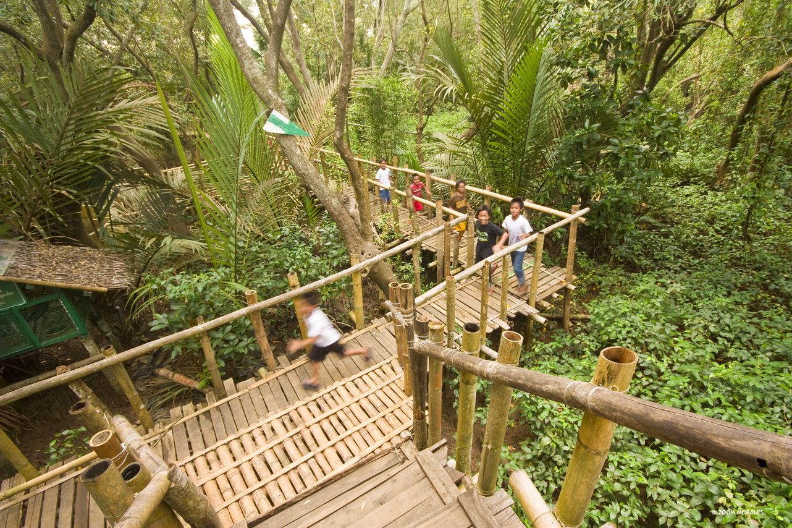
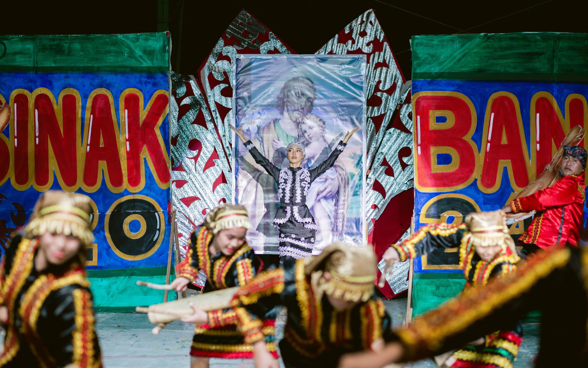

Misamis Occidental Aquamarine Park is a tropical resort and habitat for various marine mammals in Misamis Occidental, Philippines. It is located within the boundaries of the Tudela and Sinacaban municipalities. It houses a wildlife park with a variety of animals, most of whom are native to the Philippines. The park also contains hotel accommodations and a restaurant.
History and development

The coastal region of Misamis Occidental extends over 162 kilometers and features an ecosystem rich with shoals and reefs, essential for the local population's livelihood. This area not only offers scenic beauty but also plays a crucial role in the sustenance of many local communities through its abundant marine resources.
In response to economic challenges, the Misamis Occidental provincial government launched the Misamis Occidental Aquamarine Development and Protection Program (MOADPP) in 2002.[3] The initiative aimed to convert Misamis Occidental Aquamarine Park into an ecotourism site, enhancing revenue generation while prioritizing environmental preservation. The program allocated approximately 200 hectares for the development of facilities such as hotels, cottages, a mini zoo, function halls, restaurants, incubators, and a mangrove reforestation area. MOAPY Island was established as a haven for rescued dolphins and fish, while also serving as an area for aquaculture production.
The Australian Agency for International Development (AUSAID) significantly contributed by supporting livelihood projects aimed at providing alternative sources of income for local families, thus aiding in the mitigation of unemployment rates.[4] The tourism boom linked to the Aquamarine Park further augmented job opportunities for the community.
Sinakabang Festival

As the rhythmic beat of drums echoed through the air, different groups from different clusters took the stage last March 18, 2024, adorned in 𝙘𝙤𝙡𝙤𝙧𝙛𝙪𝙡 𝙖𝙣𝙙 𝙢𝙖𝙟𝙚𝙨𝙩𝙞𝙘 traditional attire during the Subanen Group Performance Competition which captivated the audience gathered for the Sinakbang Festival.
Amidst the festivities, the search for the Sinakbang Queen (𝐆𝐚𝐫𝐚 𝐒'𝐆 𝐒𝐢𝐧𝐚𝐤𝐛𝐚𝐧𝐠 2024) commenced as a symbol of beauty, grace, and embodiment of Subanen traditions.
Uniting communities and honoring the vibrant traditions of the Subanen people, this year’s Sinakbang Festival concluded on a high note leaving memories of a joyous celebration and cultural richness